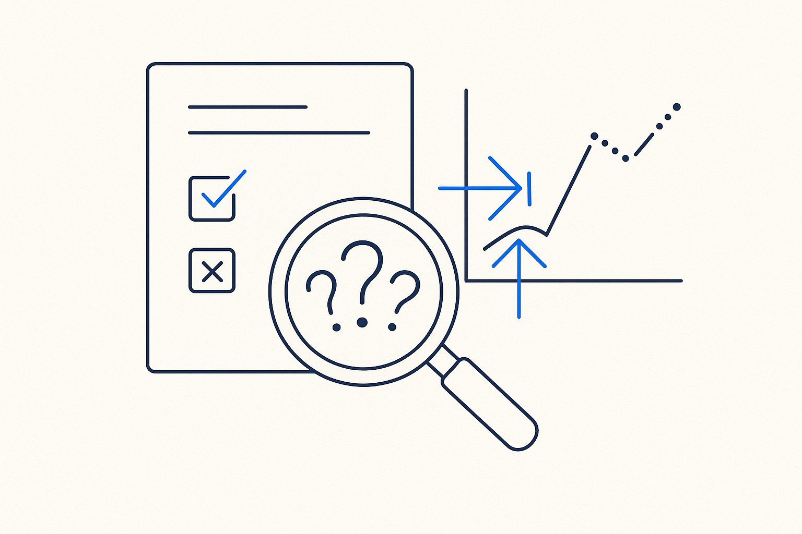

After capture, deliberately search the metadata for gaps, contradictions and hidden assumptions — and extract the rules — so you know what's missing before you build on it.

> After capture, deliberately search the metadata for gaps, contradictions and hidden assumptions — and extract the rules — so you know what's missing before you build on it.
Capturing the existing information is not the same as understanding it. Once documents and SQL are metadata, the pipeline does something most projects skip: it deliberately goes looking for what's wrong. AI helps the modeler understand the structure, then actively hunts for gaps (what should exist but doesn’t), inconsistencies (two sources that contradict each other), and hidden assumptions that no document states. At the same time it extracts the rules buried in the SQL and the docs, making implicit logic explicit.
It has two moves, and it’s worth naming both. The gap hunt looks for what is missing — the entity with no owner, the rule referenced but never defined, the report with no source. The consistency sweep looks for what conflicts — two sources that disagree, a definition that drifts between documents, a transformation that contradicts the model it claims to implement. Gap hunt finds the holes; consistency sweep finds the collisions.
The word deliberate matters. Neither gaps nor inconsistencies announce themselves; you have to search for them on purpose, because the comfortable path is to assume the captured material is coherent. It rarely is — that’s exactly why the knowledge was stuck. Surfacing the gaps and contradictions early, as data, is what turns a pile of captured documents into a map of what you actually know and what you still need to ask.
This is a reality check on the captured knowledge itself, and it feeds directly into AI interviews: the gaps become the questions, the contradictions become the things to resolve with a stakeholder. Find the holes first, then fill them.
Where it lives: the method layer of Breakthrough Modeling — find what's missing and what conflicts, on purpose.